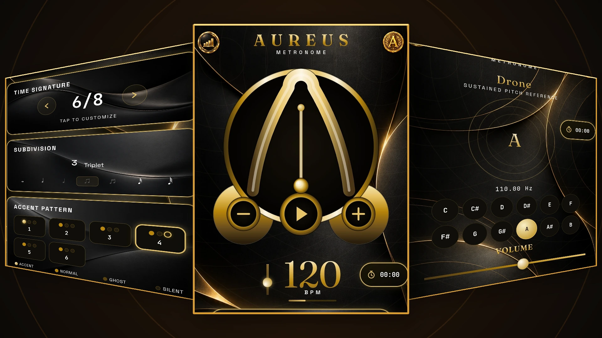
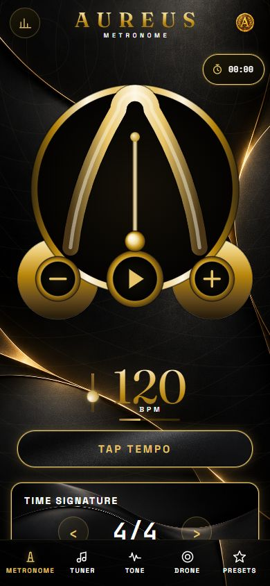
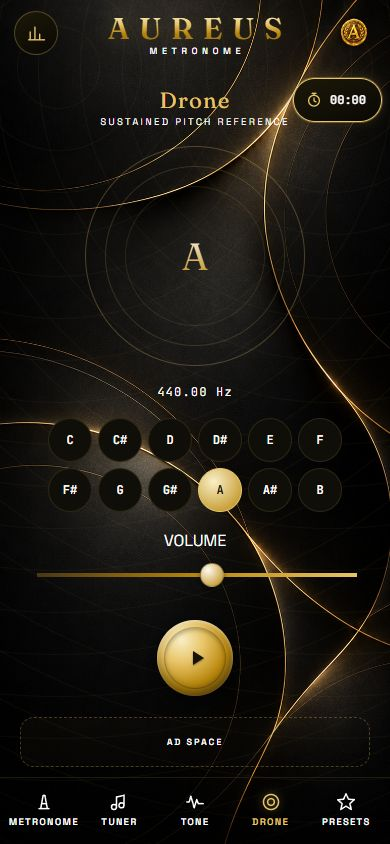

Flexible rhythm
Set the tempo, time signature, subdivisions, tuplets, shuffle, and beat accents.
AUREUS BY MINNYMEDIA
A premium metronome and practice app for musicians who care about precise rhythm, focused sessions, and steady progress.

View largerTHE PRACTICE TOOLKIT
Shape a session around the music you are working on, then keep your attention on playing.
Set the tempo, time signature, subdivisions, tuplets, shuffle, and beat accents.
Choose classic clicks or focused sampled drums, including a simple groove.
Use the chromatic tuner, reference tone, and drone to work on intonation.
Save presets, use a session timer, and review practice statistics.
A LOOK INSIDE
Dark surfaces, warm gold details, and clear controls give your practice session a calm, focused home.
A preview of the AUREUS metronome and practice tools.





DEVELOPER & SUPPORT
Questions about AUREUS or need support? Contact the developer directly.